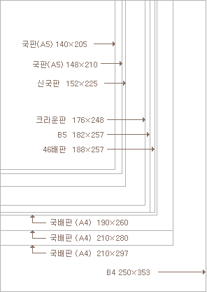
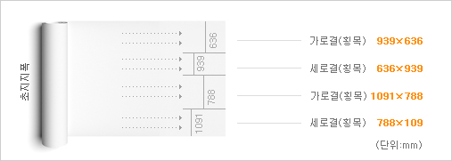

홈
·
트윈벨미디어
··
이벤트
인쇄가이드.
인쇄 및 제작과 관련된 사이즈, 종이 종류, 종이 재질, 컬러설정, 서체설정, PDF 변환 등 제작에 도움을 드리기 위해 담았습니다.
전체
학원 / 교육교재
일반 / 출판도서
카달로그 / 브로셔
정기간행물
보고서 / 매뉴얼
리플렛 / 팜플렛
포스터 / 표지
■ 인쇄기본
제작사이즈, 종이, 컬러설정, 서체설정, PDF 변환 등에 관한 정보입니다.
▣ 판형 (제작사이즈)
표준 재단치수(가로ⅹ세로 길이)에 의해 만들어진 인쇄용지 또는 인쇄물의 크기(size)를 말합니다. 출판의 목적, 출판물의 성격, 독자의 취향과 편의성 등을
고려하여 출판기획단계에서 결정됩니다. 용지의 종류는 원판 사이즈에 따라 A계열(국전지)과 B계열(46전지)로 나뉘며, A계열(국전지)은 939ⅹ636mm,
B계열(46전지)은 1091ⅹ788mm 입니다. 국전지는 A1으로 부르며 등분하는 횟수에 따라 크기가 작아지며 A2, A3, A4 등으로 부르고 (예. A1을 4등분
하여 8조각으로 나누면 A4라고 부른다) 46전지는 B1으로 부르며 등분하여 나뉘어진 조각의 숫자로 B2(2절지), B3(4절지), B4(8절지) 등으로 부릅니다.
▣ 판형 (제작사이즈)
| 판형 | 명칭 | 재단사이즈(mm) | 작업사이즈(mm) | 제작용도 |
|---|---|---|---|---|
| A4 | 국배판 | 280×210 | 286×216 | |
| A4 | 국배판 | 260×190 | 266×196 | 문예물, 교과서, 단행본 |
| A4 | 국배판 | 210×148 | 216×150 | |
| A5 | 국배판 | 205×140 | 211×146 | 수필, 소설 |
| A6 | 국반판(문고판) | 148×105 | 154×111 | 신문, 포스터 |
| B3 | 신문대판 | 545×394 | 551×400 | 생활정보지 |
| B4 | 타블로이드 | 374×254 | 380×260 | 초등교과서, 참고서, 여성지 |
| B5 | 타블로이드 | 353×250 | 359×256 | 대학교재, 참고서, 문제집, 주간지 |
| B6 | 4X6 배판 | 257×188 | 263×194 | 학술서, 소설, 일반 서적물(자기계발서, 자서전 등) |
| 규격외 | 4X6 배판(다이제스티판, 포켓판) | 188×128 | 194×134 | 소설, 자서전, 전문서적 |
| 신국판(신A5) | 225×152 | 231×158 | ||
| 신국판(신A5) | 224×154 | 230×160 | 사진집 | |
| 18절판(크라운판) | 248×176 | 254×182 | 일반 단행본 | |
| 30절판 | 205×125 | 211×131 | 문고판 | |
| 3X6판 | 182×103 | 188×109 | 문고판 | |
| 신4X6판 | 128×94 | 134×100 | 시집, 수필 | |
| 다찌판 | 210×128 |
▣ 주요판형 비교


.png)
▣ 주요판형 비교
인쇄물(완성품)의 최종적 크기(Size)
일반 인쇄에서는 작업물의 크기 보다 큰 종이에 인쇄 후 사방을 재단합니다.
가정용 프린터가 처음부터 원하는 규격 용지에 인쇄를 하는 것과 차이가
있습니다.
일반 인쇄에서는 작업물의 크기 보다 큰 종이에 인쇄 후 사방을 재단합니다.
가정용 프린터가 처음부터 원하는 규격 용지에 인쇄를 하는 것과 차이가
있습니다.
▣ 주요판형 비교
재단사이즈(완성된 인쇄물)에 여유분을 포함한 크기
인쇄 후 재단하는 과정에서 오차가 발생하여 인쇄되지 않은 영역이 보일 수
있습니다. 디자인, 사진 이미지, 바탕 전체에 컬러가 인쇄된 경우에 작업
사이즈까지 채워져 있지 않고 재단사이즈 까지만 채워져 있으면 재단 후 흰색 종이면이 남을 수 있습니다.
인쇄 후 재단하는 과정에서 오차가 발생하여 인쇄되지 않은 영역이 보일 수
있습니다. 디자인, 사진 이미지, 바탕 전체에 컬러가 인쇄된 경우에 작업
사이즈까지 채워져 있지 않고 재단사이즈 까지만 채워져 있으면 재단 후 흰색 종이면이 남을 수 있습니다.
■ 종이의 기본
▣ 종이 특성
종이는 기본적으로 평량(g/㎡)과 두께(㎛=1/1000mm), 밀도, 수분, 화분, 표면성, 평활도 등의 물리적인 특성과 인장강도와 내절도 등의 기계적 특성 및
백색도, 불투명도와 같은 빛에 따른 광학적인 특성을 가지고 있습니다. 이러한 종이의 특성은 인쇄품질을 좌우할 만큼 중요하므로 최상의 인쇄 결과를 얻기
위해서 종이의 특성을 고려해야 합니다.
▣ 종이 이름
제지사가 정한 이름입니다. 따라서 유사한 용지라도 제지사가 다르면 다른 이름을 가지고 있습니다.
보편적으로 사용되는 아트지나 스노우지, 모조지 처럼 비슷한 질감의 종이는 제지사마다 동일한 이름으로 유통하기도 합니다.
보편적으로 사용되는 아트지나 스노우지, 모조지 처럼 비슷한 질감의 종이는 제지사마다 동일한 이름으로 유통하기도 합니다.
▣ 종이 평량
평량이란 종이의 무게 단위를 말합니다.
단위 1제곱미터 당(1mⅹ1m) 무게를 나타내며 단위는 g/m²입니다. 흔히 용지의 `평량`을 종이의 두께로 생각하는 경우가 있는데 이것은 오해입니다.
평량이 높다고 반드시 종이가 두꺼운 것은 아니며 제조 과정에서 압착의 정도에 따라 두께가 달라지며 종이의 밀도가 높으면 두께가 얇고 종이의 밀도가
낮으면 두꺼워집니다. 평량은 종이의 강도, 불투명도, 두께 등에 영향을 줍니다.
단위 1제곱미터 당(1mⅹ1m) 무게를 나타내며 단위는 g/m²입니다. 흔히 용지의 `평량`을 종이의 두께로 생각하는 경우가 있는데 이것은 오해입니다.
평량이 높다고 반드시 종이가 두꺼운 것은 아니며 제조 과정에서 압착의 정도에 따라 두께가 달라지며 종이의 밀도가 높으면 두께가 얇고 종이의 밀도가
낮으면 두꺼워집니다. 평량은 종이의 강도, 불투명도, 두께 등에 영향을 줍니다.
▣ 종이 두께
종이 한 장의 높이를 말합니다. 단위는 ㎛(1/1000mm)를 사용하며 1 ㎛(마이크로미터)는 0.001mm 입니다.
종이의 평량과 두께는 비례하지 않습니다. 평량이 높다고 두께가 두꺼운 것이 아니며 두께가 두껍다고 평량이 높은 것도 아닙니다.
종이의 두께는 작업물의 디자인에 영향을 주며 책이나 잡지의 두께를 결정하는 중요한 요소입니다.
종이의 평량과 두께는 비례하지 않습니다. 평량이 높다고 두께가 두꺼운 것이 아니며 두께가 두껍다고 평량이 높은 것도 아닙니다.
종이의 두께는 작업물의 디자인에 영향을 주며 책이나 잡지의 두께를 결정하는 중요한 요소입니다.
▣ 종이 광택
입사광선의 세기에 대한 물체표면의 반사광의 세기를 말합니다. 반사광의 세기는 주로 백분율(%)로 표시하고, 수치가 높을수록 광택이 강한 종이입니다.
종이 생산시 도공과정을 거쳐 표면이 더 평활해지고 광택이 생기게 합니다. 광택지는 고광택과 반광택이 있으며 광택지는 사진 출력용으로 적합하고
아트지는 인쇄에 적합한 용지입니다.
종이 생산시 도공과정을 거쳐 표면이 더 평활해지고 광택이 생기게 합니다. 광택지는 고광택과 반광택이 있으며 광택지는 사진 출력용으로 적합하고
아트지는 인쇄에 적합한 용지입니다.
▣ 종이 결
종이의 원료인 목재 섬유는 가늘고 긴 섬유로 가공과정에서 섬유의 배열 형태에 따라 종목과 횡목으로 구분합니다.
종이를 제조할 때 섬유는 초지기(연속적으로 종이를 만드는 기계)의 진행 방향으로 배열돼 결을 형성하게 되며 이 방향을 MD(종목, Machine Direction)라 하고, 이와 수직인 폭 방향을 CD(횡목, Cross Direction)라고 합니다. 이러한 종이의 물리적 특성을 고려하여 인쇄물을 제작해야 하며 종이의 결에 맞게 인쇄물을 제작해야 제본을 했을 때, 인쇄물의 바닥이 뒤틀리지 않고 평평하게 제작될 수 있습니다. 종이의 결은 포장재에 표기되어 있으며, 종이가 세로로 쉽게 찢어지면 종목이고 그렇지 않으면 횡목입니다.
종이를 제조할 때 섬유는 초지기(연속적으로 종이를 만드는 기계)의 진행 방향으로 배열돼 결을 형성하게 되며 이 방향을 MD(종목, Machine Direction)라 하고, 이와 수직인 폭 방향을 CD(횡목, Cross Direction)라고 합니다. 이러한 종이의 물리적 특성을 고려하여 인쇄물을 제작해야 하며 종이의 결에 맞게 인쇄물을 제작해야 제본을 했을 때, 인쇄물의 바닥이 뒤틀리지 않고 평평하게 제작될 수 있습니다. 종이의 결은 포장재에 표기되어 있으며, 종이가 세로로 쉽게 찢어지면 종목이고 그렇지 않으면 횡목입니다.
